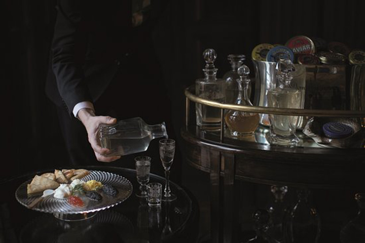
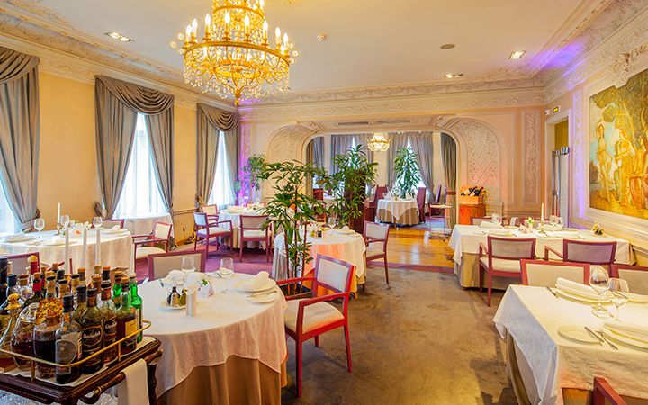

Икорный бар
Икорный бар - вкус роскоши. В ресторане есть специальные блюда.Ты можеш опыт водки пока кушаешь икру. Удивительная кулинарная еда здесь для богатых.

Палкин
Ресторан "Палкин" - один из старейших ресторанов Санкт-Петербург. Ресторан имеет богатую историю. Это был кинотеатр, казино и ресторан. В ресторане подают много блюд, таких как щчи, борщ и японская черная вагью. Говядина Wagyu - очень дорогое мясо, но вы получаете его по хорошей цене
Бао Моти
Бао Моти это ресторан, который делает деликатес моти. Здесь встречаются инновации и традиции. Моти это тесто сделано из риса и он часто содержит мороженое. Это также может быть в супах.Ресторан дешевый и чистый.